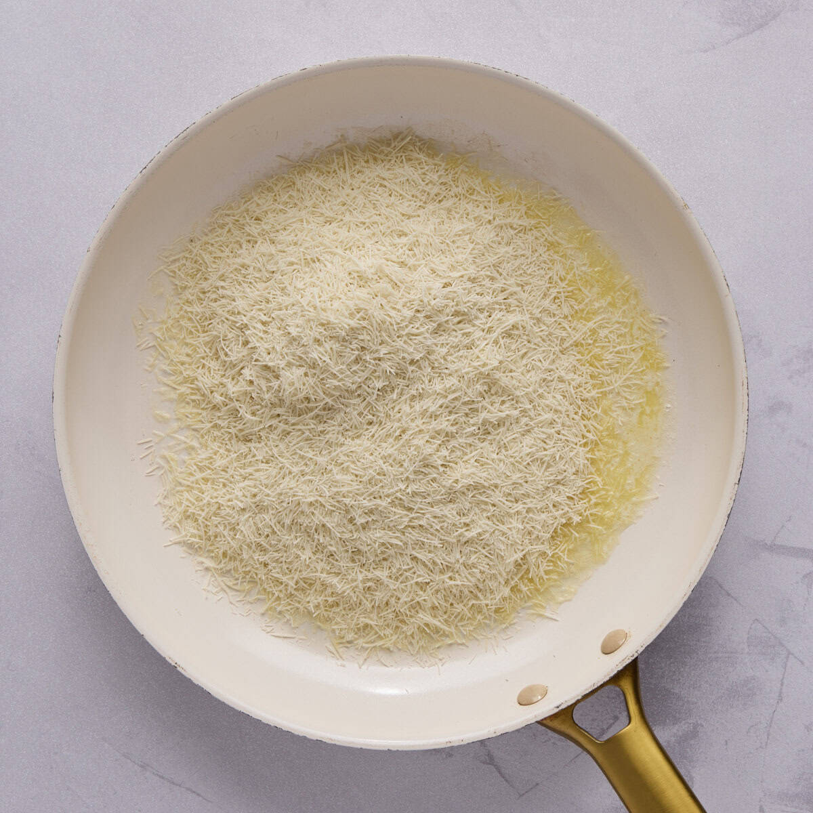
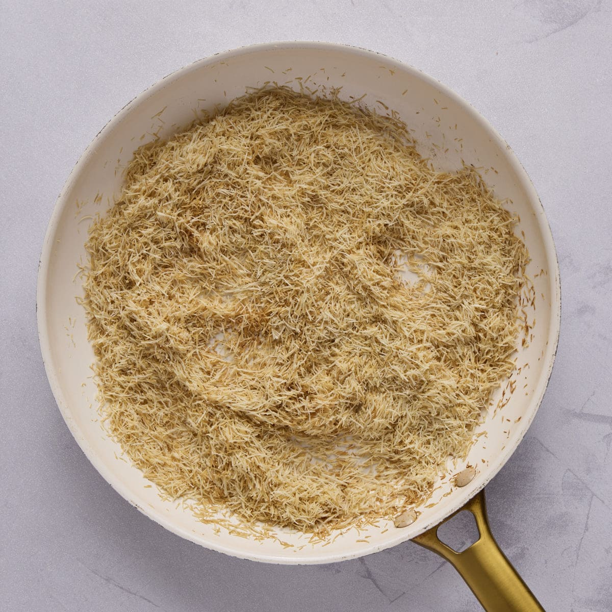
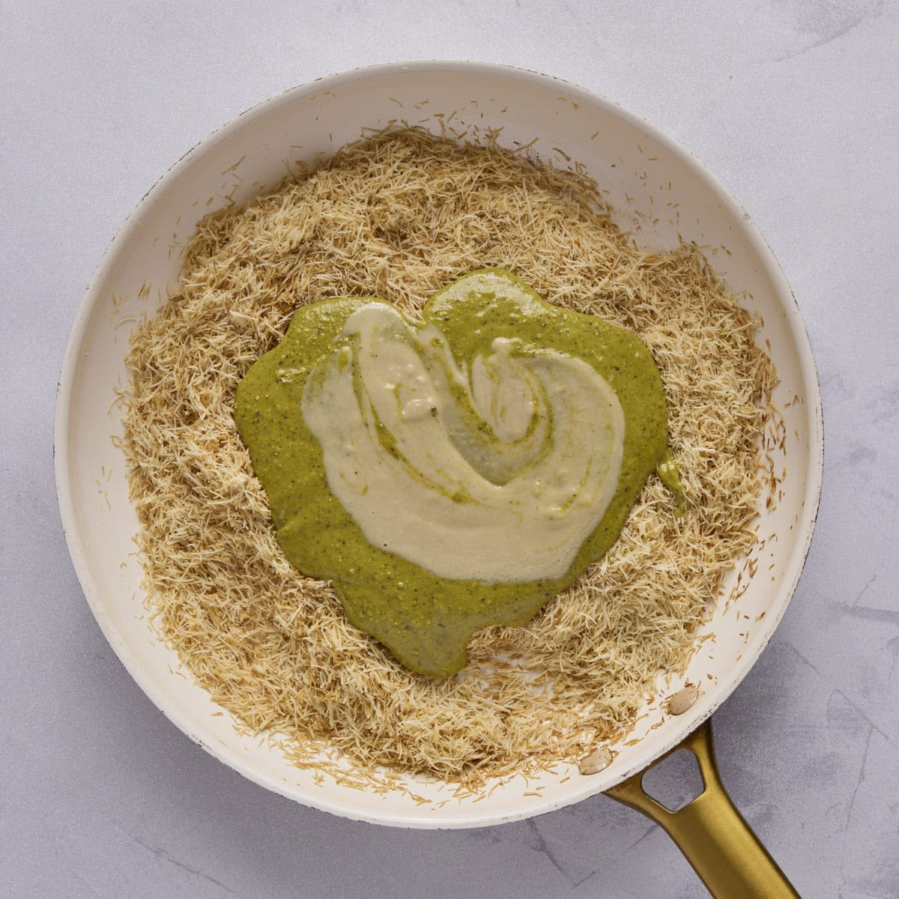
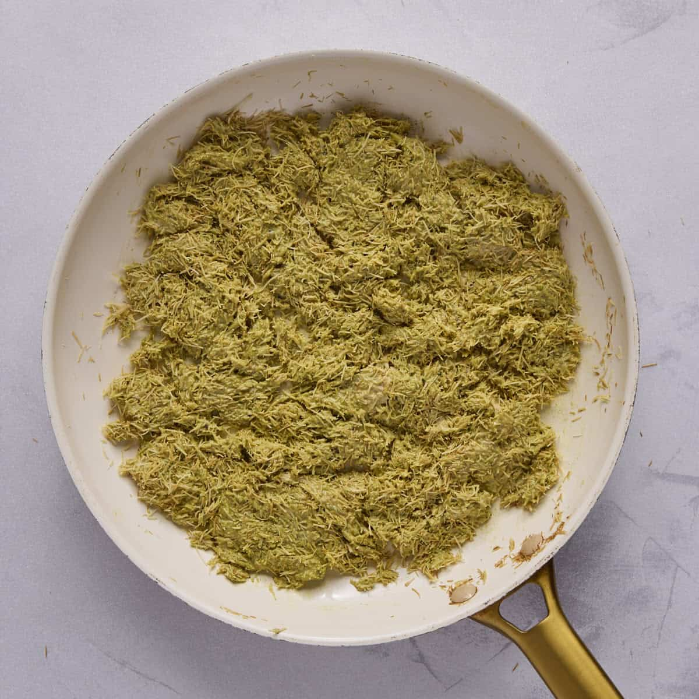
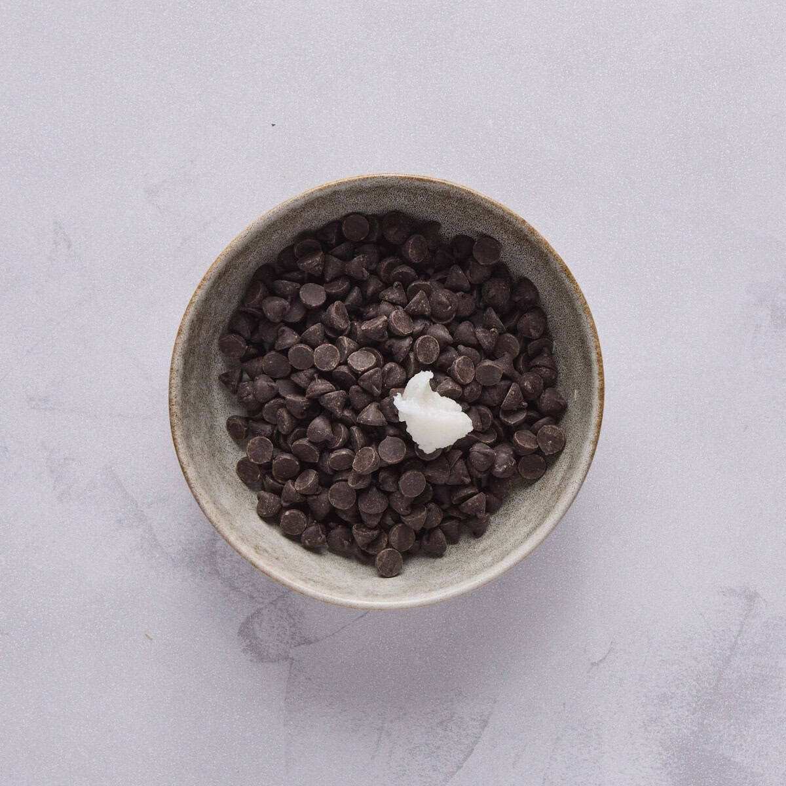
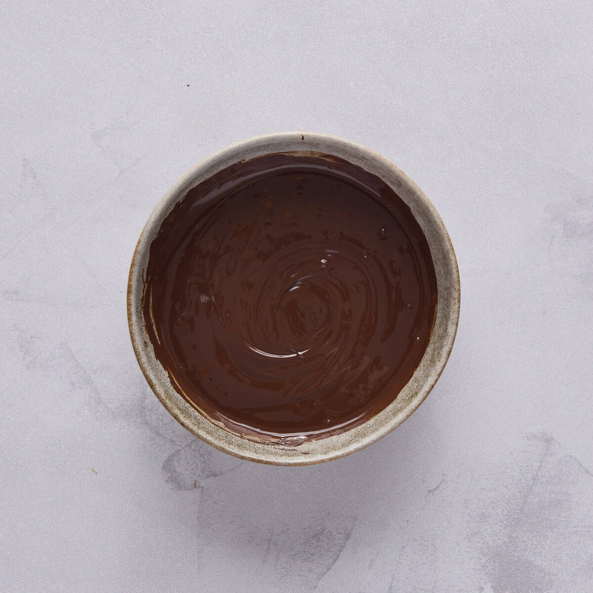
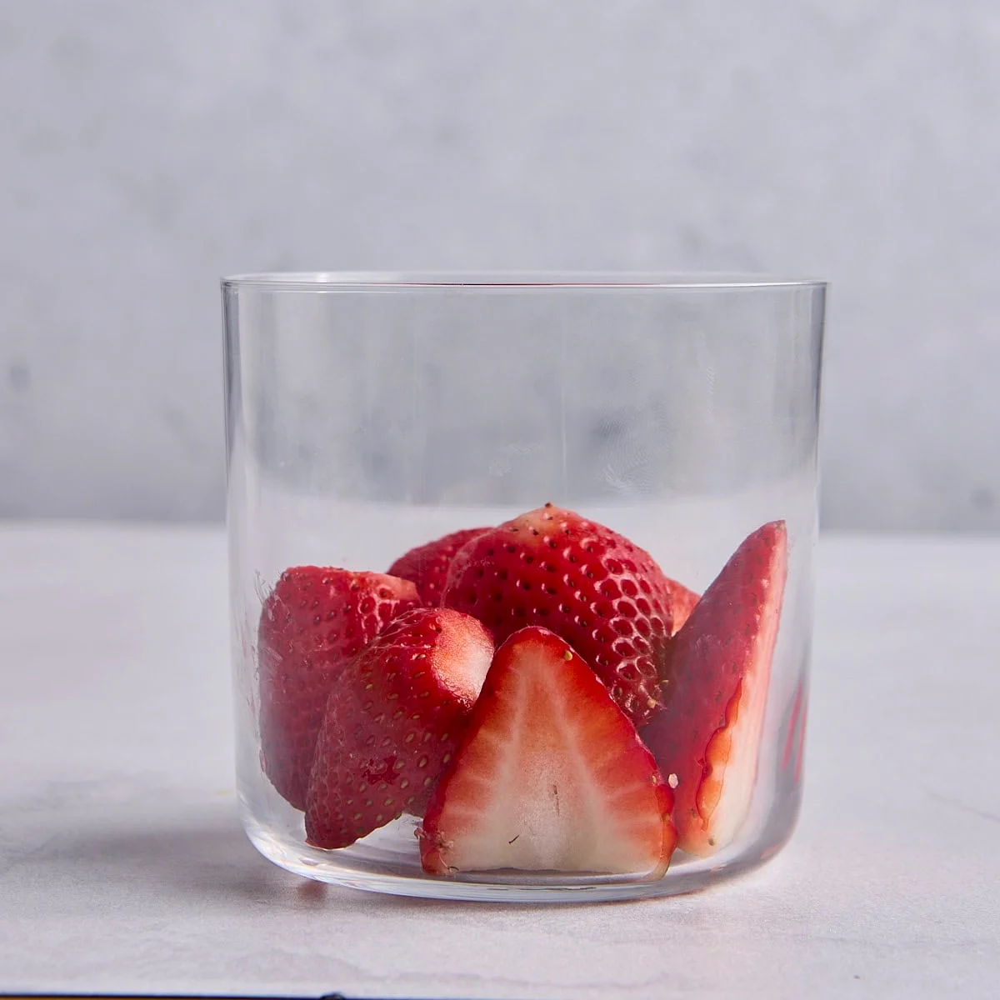
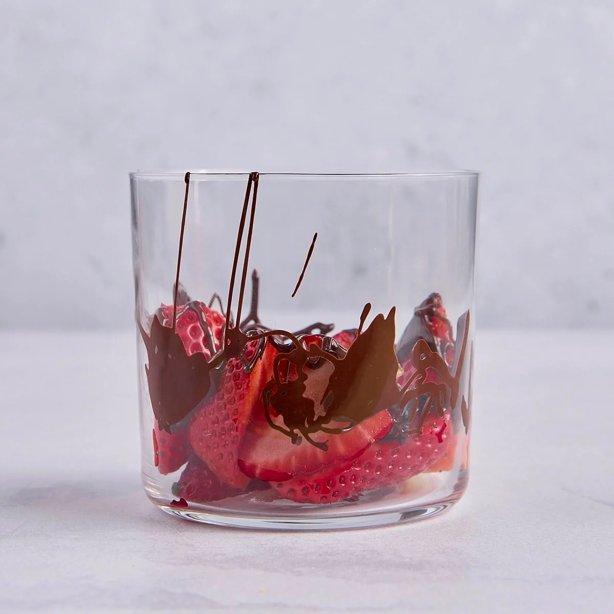
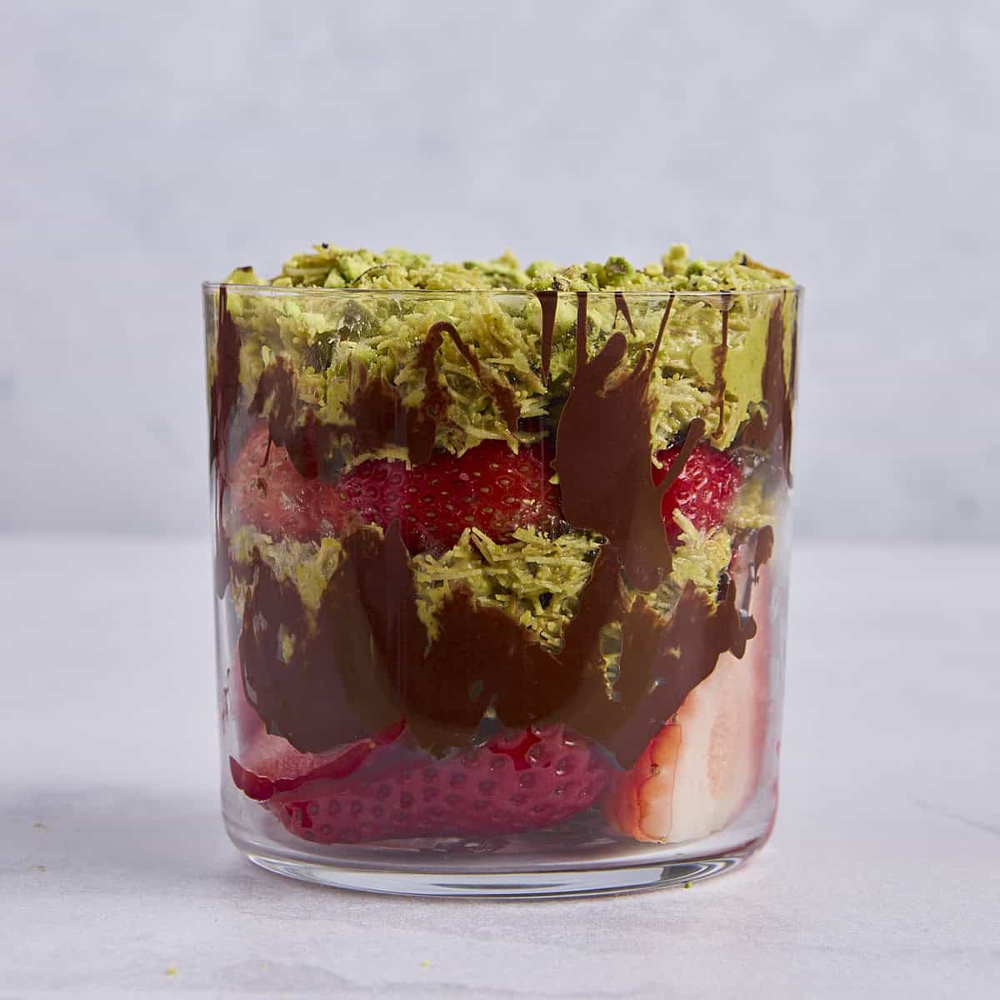
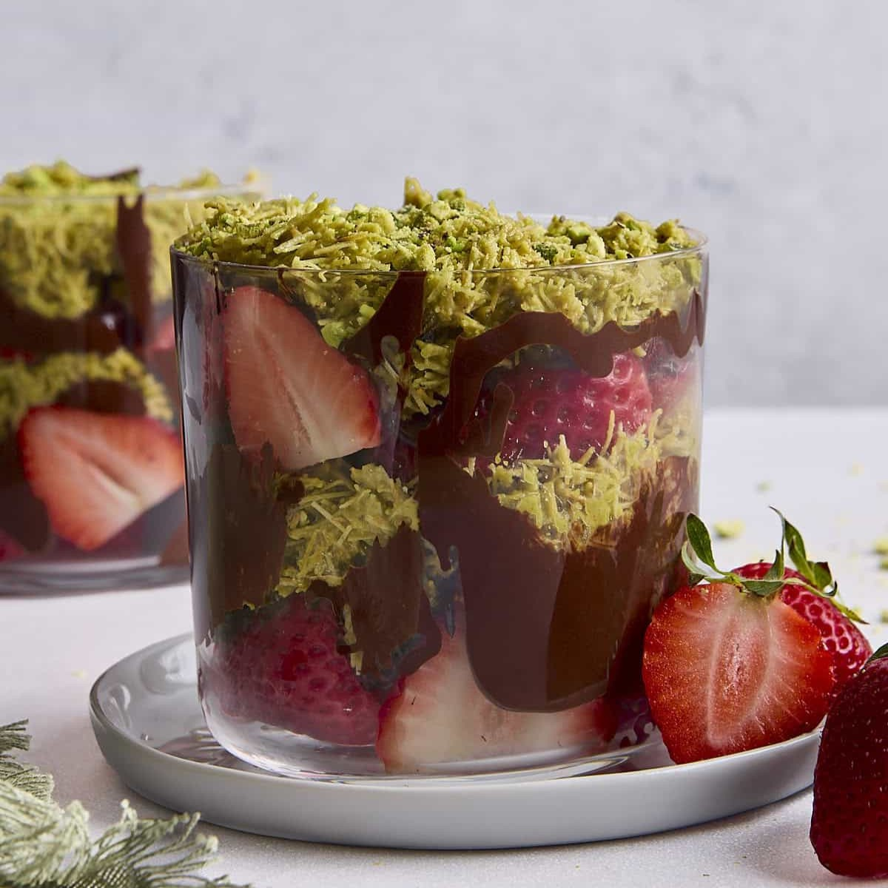

Follow these instructions step by step

step 1
Chop the kataifi and add it to a skillet with melted butter.

Step 2
Stir it while it toasts until it is brown and crispy.

Step 3
Remove the pan from the heat and add the pistachio cream and tahini.

Step 4
Then just stir it all together until is well combined and set aside while you prepare the other layers.

Step 5
For the melted chocolate layer, add the chips and coconut oil to a small bowl.

Step 6
Melt it in the microwave, stirring every 30 seconds until it is melted.

Step 7
To assemble your dessert, add the first layer of fresh strawberries to a small dessert cup.

Step 8
Then, drizzle in a layer of chocolate.

Step 9
Spoon in the kataifi and pistachio cream mixture on top of the chocolate.

Last Step
Now you can repeat this with the second layer of strawberries, chocolate, and crunchy pistachio cream!